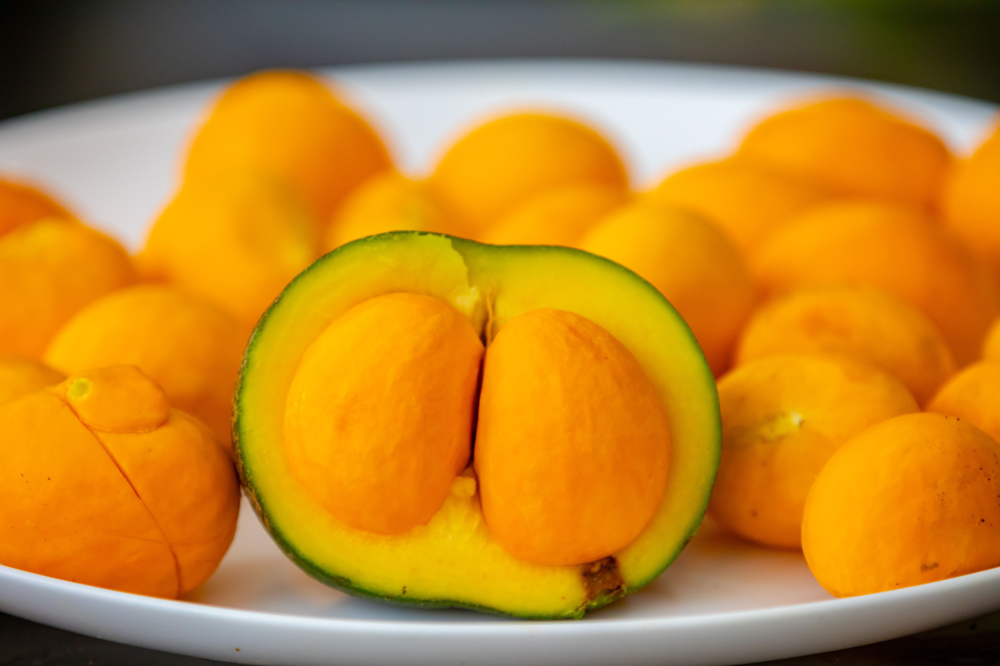
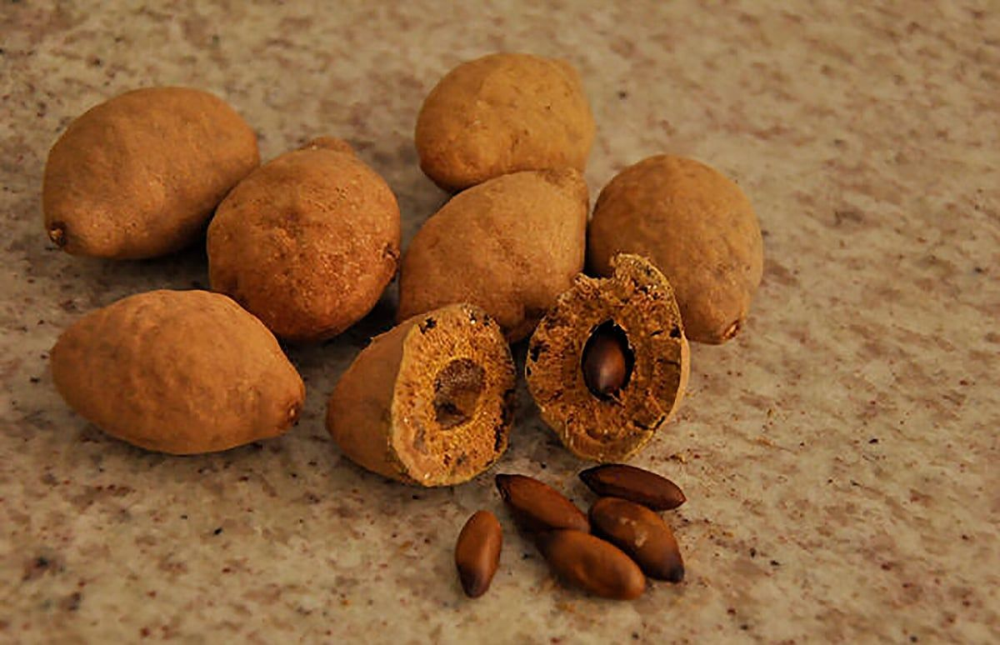

Pequi
✨ Antioxidantes e gorduras boas
💡 Protege os vasos sanguíneos

Baru
✨ Fonte de gorduras insaturadas
💡 Ajuda no equilíbrio do colesterol
Descubra frutas típicas e seus benefícios
✨ Antioxidantes e gorduras boas
💡 Protege os vasos sanguíneos
✨ Fonte de gorduras insaturadas
💡 Ajuda no equilíbrio do colesterol